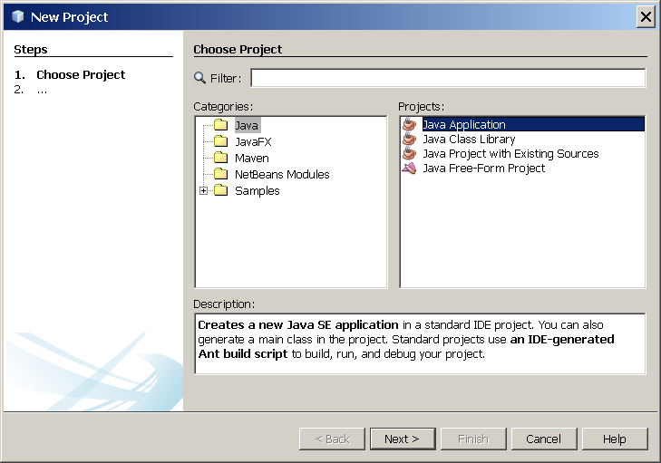
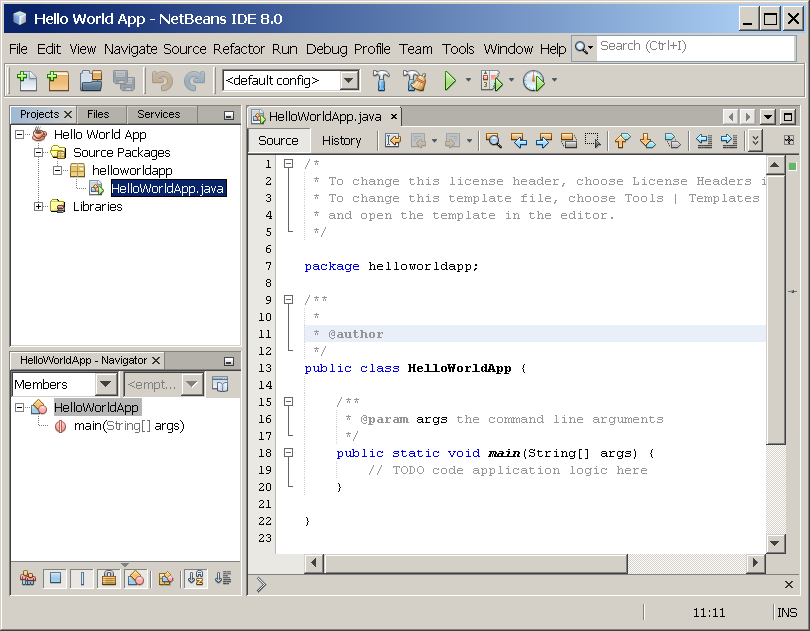

课程： "Hello World!" 应用
本教程基于 JDK 8 编写。教程中的示例和练习没有用到后续发布版本中的特性，并且可能使用过时的技术。
查看 Java 语言变更 了解 Java SE 9 及后续发布版本的语言更新概要。
查看 JDK 发布说明 了解所有 JDK 发布版本关于新特性、增强、移除或废弃选项的信息。
针对 NetBeans IDE 的 "Hello World!"
是时候去写您的第一个应用了！这些详细的操作是为使用 NetBeans IDE 的用户准备的。NetBeans IDE 运行在 Java 平台上，这也就意味着您可以在任何操作系统上使用， 只要安装了 JDK。这些操作系统包括 Microsoft Windows，Solaris OS，Linux，和 Mac OS X。
核对表

为编写首个程序，您需要：
-
Java SE 开发工具箱 (本例中使用 JDK 7)
- Microsoft Windows，Solaris OS，和 Linux： Java SE 下载
- Mac OS X： developer.apple.com
-
NetBeans IDE
创建您的首个应用
您的首个应用，HelloWorldApp，只是简单地显示问候语 "Hello World!"，为了创建这个程序，需要：
-
创建 IDE 项目
当您创建 IDE 项目时，就是创建了构建和运行应用的环境。使用 IDE，消除了使用命令行开发时的配置问题。您仅需通过 IDE 中的一个菜单便可构建或运行应用。
-
向生成的原文件中添加代码
源文件中包含用 Java 编程语言写的代码。创建 IDE 项目时，会自动生成一个骨架源文件。您稍后将修改源文件并添加 "Hello World!" 消息。
-
将源文件编译为 .class 文件
IDE 调用 Java 编程语言的编译器
(javac)，它接收源文件并将其翻译为 JVM 可以理解的指令。包含这些指令的文件叫做 字节码。 -
运行程序
IDE 调用 Java 应用 启动工具
(java)，它使用 JVM 运行您的应用。
创建 IDE 项目
为了创建 IDE 项目：
-
启动 NetBeans IDE。
-
在 Microsoft Windows 系统中，您可以使用启动菜单中的 NetBeans IDE 项。
-
在 Solaris OS 和 Linux 系统重，通过执行指向 IDE 的
bin目录的启动脚本，并输入./netbeans启动。 -
在 Mac OS X 系统中，点击 NetBeans IDE 应用程序图标。
-
-
在 NetBeans IDE 中，选择 File | New Project...。

选中 File | New Project 菜单项的 NetBeans IDE。
-
在 New Project 界面，展开 Java 分组并选择 Java Application。如下图所示：
 NetBeans IDE，New Project，Choose Project 页。
-
在 Name and Location 页，执行下述操作 (如下图所示那样)：
-
在 Project Name 域，填入
Hello World App。 -
在 Create Main Class 域，填入
helloworldapp.HelloWorldApp。

NetBeans IDE，New Project，Name and Location 页。
-
-
点击 Finish。
项目已创建并在 IDE 中打开。您将看到如下内容：
-
Projects 窗口，包含一个由项目组件构成的树视图，其中包括源文件，依赖库，等等。
-
Source Editor 窗口，包含一个打开了的
HelloWorldApp.java文件。 -
Navigator 窗口，您可以使用它来在选种类的不同元素之间快速导航。
 打开项目 HelloWorldApp 的 NetBeans IDE。
添加 JDK 8 到平台列表 (如果需要的话)
可能需要添加 JDK 8 到 IDE 的可用平台列表。如要添加，选择 Tools | Java Platforms，如下图所示：

从 Tools 菜单选择 Java 平台管理器
如果在已安装平台列表中没看到 JDK 8 (也可能叫做 1.8 或 1.8.0)，点击 Add Platform，导航到您 JDK 8 的安装目录，然后点击 Finish。您现在应该可以看到这个新添加的平台：
Java 平台管理器
为了将此 JDK 设置为所有项目的默认 JDK，您可以切换到命令行，使用 --jdkhome 运行 IDE；或者在 INSTALLATION_DIRECTORY/etc/netbeans.conf
文件中的 netbeans_j2sdkhome 属性中输入 JDK 的路径。
要是只为当前项目指定该 JDK，在项目面板中选择 Hello World App，选择 File | Project Properties (Hello World App)，点击 Libraries，然后在 Java 平台下拉菜单中选择 JDK 1.8。您将看到如下屏幕：
IDE 现已配置为 JDK 8。
向生成的原文件中添加代码
在您创建这个项目的过程中，在 New Project 页面勾选了 Create Main Class。因此 IDE 会为您生成一个骨架类。 你可以添加 "Hello World!" 消息到骨架代码，通过将：
// TODO code application logic here
替换为：
System.out.println("Hello World!"); // Display the string.
可选地，您可以将下面四行代码：
/** * * @author */
替换为：
/** * The HelloWorldApp class implements an application that * simply prints "Hello World!" to standard output. */
这四行是代码注释，并不会影响程序的运行。后面小节将介绍代码注释的使用和格式。
输入时要注意


注意： 输入的所有代码，注释和文件名，包括编译器 (
javac) 和启动器
(java) 都是大小写敏感的。HelloWorldApp 是 不同于 helloworldapp 的。
选择 File | Save 保存修改。
源文件看起来应如下：
/*
* To change this template, choose Tools | Templates
* and open the template in the editor.
*/
package helloworldapp;
/**
* The HelloWorldApp class implements an application that
* simply prints "Hello World!" to standard output.
*/
public class HelloWorldApp {
/**
* @param args the command line arguments
*/
public static void main(String[] args) {
System.out.println("Hello World!"); // Display the string.
}
}
编译源为 .class 文件
选择 Run | Build Project (Hello World App) 进行编译。
将自动打开输出窗口并显示下图所示的输出：
显示 HelloWorld 项目构建结果的输出窗口。
如果输出中包含 BUILD SUCCESSFUL，恭喜您！您已经成功编译了程序！
如果输出中包含 BUILD FAILED，您的代码中可能包含语法错误。输出窗口中会报告错误。您可以点击链接导航到出错的代码。然后修复错误并再次运行 Run |
Build Project。
构建项目后将生成字节码文件 HelloWorldApp.class。您可以打开 Files 窗口，并展开 Hello World App/build/classes/helloworldapp
节点查看生成的新文件，如下图所示：
文件窗口，展示了生成的 .class 文件。
现在，您已经构建了项目，接下来就可以运行程序了。
运行程序
选择菜单栏中的 Run | Run Main Project。
您将看到下图所示内容。
程序打印出 "Hello World!" 到输出窗口 (还有构建脚本输出的其它信息)。
恭喜！您的程序可以正常运行！
使用 NetBeans IDE 完成后续课程
后续几节将详细剖析这个简单的应用。之后，将深入到核心语言特性的讲解，同时也会接触到更多的示例。尽管后续教程中没有给出使用 NetBeans IDE 的说明， 您也可以轻松地使用 IDE 编写和运行示例代码。下面给出了一些关于使用 IDE 的提示，和对一些 IDE 行为的解释：
-
一旦创建了项目，就可以通过 New File 添加文件。选择 File | New File，然后选择一个模板，比如 Empty Java File。
-
您也可以编译和运行单独的文件，只需使用 Compile File (F9) 和 Run File (Shift-F6) 命令。如果您使用 Run Main Project 命令，将运行 IDE 中设置的主项目的主类。因此，如果您在 HelloWorldApp 中创建了其它类，同时尝试使用 Run Main Project 命令运行该文件，IDE 将会运行
HelloWorldApp文件。 -
您可能想为包含多个源文件的示例应用创建独立的 IDE 项目。
-
当您在键入代码时，可能会经常出现代码补全框。您可以选择忽略代码补全框并继续输入，或者从推荐的表达式中选择一个。如果您希望关闭代码补全框的自动出现，您可以关闭这项特性。 选择 Tools | Options | Editor，点击 Code Completion 标签页并取消选中 Auto Popup Completion Window。
-
如果您想要对源文件重命名，可以在 Projects 窗口中，选择 Refactor 菜单。IDE 将弹出 Rename 对话框，引导您重命名类并更新指向这个类的代码。然后点击 Refactor 应用这项更改。如果您的项目中只有一个类，那这一系列操作看起来是不必要的， 但是在大项目中，当您的修改影响到其它部分代码时，这将是非常有用的。
-
关于 NetBeans IDE 更详细的指南，查看 NetBeans 文档。